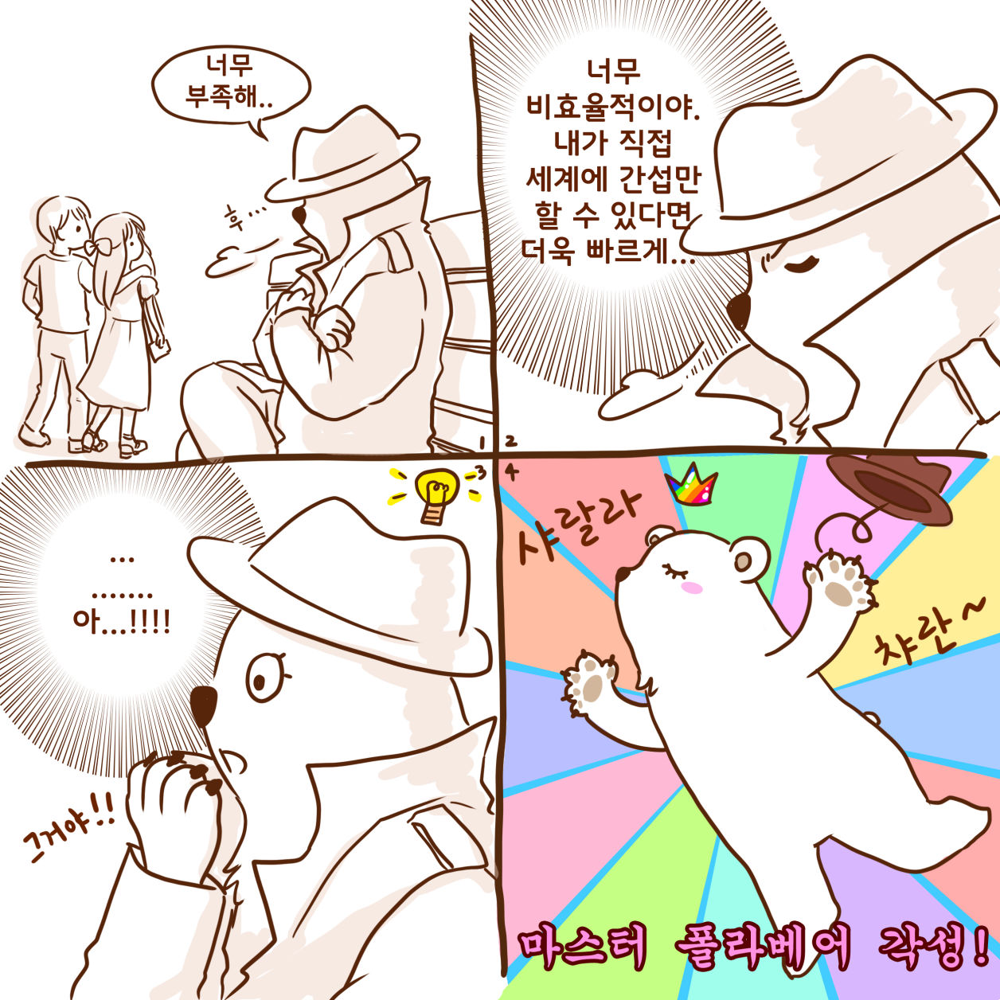

마스터 폴라베어 첫번째 각성 계기!

각성을 하고 나면 할 수 있는 일들...(!?)
세계관 : 마스터 폴라베어의 시작 The Start of Master Polar Bear & Arctic Friends
Master Polar Bear is the mother of two children who lived normally in the North Pole.
From some point on, dark clouds of environmental pollution and climate change hung on the earth, and finally the glaciers melted, and even the space and food for children to spend were disappearing.
So Polar thought.
I have to remind busy people about the North Pole once again.
I think people need to pay attention to how important the North Pole is and what is happening to the creatures living here.
There, she begins her own time-leap trip.
She believe that the future of the North Pole will change someday if she go into various times and dimensions and correct them one by one.
Friends from the North Pole also take part in her journey.
Don't miss the message from Arctic friends in the warm and soft artworks.
제 오랜 친구인 40살 된 하얀 곰돌이 인형,
이 인형이 마스터 폴라베어의 모티브가 되어 주었고
이 친구가 제 옆에 오래 있어준 만큼
이제는 자유롭게 여행을 보내주고 싶다-라는 마음에서부터 처음 상상이 시작 되었어요.
그리고 늦게 결혼하고 늦은 나이에 아이를 키우게 되니
제가 없어지고 난 후의 지구를 살아갈 아이가 걱정이 되기 시작했어요.
그래서 지구, 기후 변화, 환경 오염 이런 부분에 대해서도 자연스레 관심을 가지게 되고
나 하나의 작은 힘이겠지만 할 수 있는 것이 무엇이 있을까- 하고 고민하다가 그림을 통해서 이야기 해보자! 하는 결론을 가지게 됐어요.
하얀 곰돌이, 북극곰은 자신의 아이를 지키고 자신이 사랑하는 터전을 구해내기 위해
다양한 시간과 차원 속으로 여행을 떠나게 됩니다.
강하고 거센 외침보다는,
물결처럼 잔잔하지만 멀리 오래오래 퍼져나가는 그런 프로젝트가 되기를 기원합니다.
Master Polar Bear & Arctic Friends : Polar
이름 : 폴라 (Polar)
특성 : 시간 여행자 (Time traveler)
북극곰 (Polar Bear)
환경 오염과 기후 변화 때문에 아이들을 잃은 기억이 있는 엄마 북극곰.
이번 아이들을 미래로부터 지켜내기 위해, 다양한 차원과 시간 속으로 직접 뛰어들어
시간을 하나하나 구하고 바꿔 나가기 시작합니다.
의지가 강하고 꾸준한 성격으로 적응력이 좋아서 매번 새로운 세계에서의 일도 금방 배워 나갑니다.
인류의 가능성을 믿고 지구를 되살릴 수 있는 열쇠 또한 인간에게 있다고 생각하고 여행을 이어나갑니다.
Master Polar Bear & Arctic Friends : Alpha
이름 : 알파 (Alpha)
특성 :회귀자 (Returner)
북극여우 (Arctic Fox)
그는 같은 시기를 수천 번 이상 살고 있는 회귀자로, 매번 북극을 구할 방법을 찾아 다양한 시도를 하고 있습니다.
우리 일상에 익숙하게 녹아들어 삶을 살고 있으며
알고 있는 것이 많기 때문에 놀라는 일이 없어요.
이번 회차에서 발생한 폴라베어라는 변수를 아주 흥미롭게 지켜보고 있습니다.
Master Polar Bear & Arctic Friends : Cookie
이름 : 쿠키 (Cookie)
특성 : 귀여운 사교가 (Cute socialite)
하프물범 (Harp seal)
귀여움이 무기인 쿠키는 반경 100m 이내의 모든 생명체의 사랑을 받습니다.
심지어 천적인 북극곰에게서도요..!!
덕분에 마스터 폴라베어 뿐 아니라 악당도 반하게 만드는 만능 사교가예요.
어른이고 싶은 마음에 항상 어른 물범의 옷을 입고 있는 쿠키는, 아직 말을 할 줄 몰라요.
다양한 후드 옷을 갈아입으며, 쿠키의 친구인 베리의 도움으로 소통하고 돌봄을 받고 있어요.
Master Polar Bear & Arctic Friends : Berry
이름 : 베리 (Berry)
특성 : 달변가 (Best speaker)
북극제비갈매기 (Arctic tern)
베리는 까칠하고, 남의 일에 크게 관심이 없는 성격이예요.
하지만 어린 하프물범인 쿠키의 귀여움에 반해 쿠키만큼은 무척 아끼고 사랑하고 돌보고 있어요.
아직 말을 할 줄 모르는 귀여운 쿠키를 대신해서 말을 하고,
챙겨주고 필요로 하는 것들을 가져다 주는 등 쿠키에게 기준을 맞춰 움직이고 있어요.
달변가인 베리는 상대방을 설득하고 설명하는 재능을 가지고 있지만 쿠키의 부탁 없이는 움직이지 않아요.
아주 먼 곳을 볼 수 있는 시력 덕분에 위험을 미리 알아챌 수 있어요.
Master Polar Bear & Arctic Friends : Ever
이름 : 에버 (Ever)
특성 : 수호자 (Guardian)
순록 (Reindeer)
자연을 지키고, 보호하는 새하얀 순록 에버 (Ever).
행운을 상징하는 하얀 털을 가진 에버는 자연의 성장을 촉진하고 더 가까이에서 느낄 수 있는 힘을 가지고 있어요.
평온하고 차분한 성격으로 황폐해진 땅을 되살리는 수호신으로서 활약합니다.
힘의 근원은 아마도 금빛 뿔이 아닐까 싶어요.
전지전능한 신이 아닌 믿는 힘이 곧 능력이 되는 에버를 위해 미리 비밀을 알고 있던 폴라는 여행을 떠날 각오를 하게 됩니다.
Master Polar Bear & Arctic Friends : Ash
이름 : 애쉬 (Ash)
특성 : 영리한 모방자 (Clever imitator)
북극토끼 (Arctic Hare)
인간이 하는 모든 행동을 함께 하면서 인류가 파멸로 달려가기를 바라는 북극 토끼.
지구는 인류가 없어져야만 정화 될 수 있다고 믿기 때문에, 인간들이 무의식적으로 하는 환경 파괴의 모든 행동들을
적극적으로 지지하며 부추기고 함께 합니다.
순진무구한 생각과 표정으로 자신의 신념을 올곧게 고집하기에
인류와 공존하며 환경을 되살리려는 북극 친구들과 대립하게 됩니다.
하지만 이렇게 단호한 애쉬도, 아기 하프물범 쿠키의 귀여움 앞에서는 흐늘흐늘 녹아내려요.
Master Polar Bear Theme Roadmap
마스터폴라베어는 2022년 3월 28일 NFT를 통해 시작하게 된 프로젝트로,
엄마 북극곰과 여러 북극 친구들을 통해 환경오염, 기후변화에 대한 이야기를 들려드리고자 기획을 했습니다.
캐릭터쪽의 특성을 더 살리기 위해 사용 프로그램도 기존과 완전히 다른 것으로 선택하게 되었어요.
마스터 폴라베어는 일러스트레이터 프로그램에서 수작업의 느낌을 살려 그려나가는 벡터 그림이고요,
후보정이나 사이즈 조정 등의 작업은 포토샵에서- 영상 작업은 애프터이펙트를 사용해서 완성하고 있습니다.
마스터 폴라베어 이야기는 총 5개의 테마로 파트를 구성했고, 그 중 현재 첫번째 테마가 진행이 되고 있는 중입니다.
하나의 테마는 각각 본편 스토리 + 외전 스토리로 구성이 되어 있고요.
본편은 마스터 폴라베어 정식 스토리 라인을 따라가는 이야기로
피카레스크 구성 속에 옴니버스 형식을 결합시켜 타임리프 여행 이야기로 들려드리고 있어요.
가장 먼저 이 프로젝트가 어떤 프로젝트인지, 캐릭터는 어떤지, 다양한 차원과 시간들 속에서 무엇을 할 수 있는지를 보여주는 이야기가 바로 테마1입니다.
전체 스토리 기승전결에서 이제 막 시작하는 프롤로그 같은 단계이기도 하구요.
테마1을 총 100개의 그림(=단편 이야기)으로 구상했고,
친근한 영화 속 이야기에 폴라베어가 들어가 새롭게 그 시간대와 차원의 이야기를 고치고 생명체와 환경을 구하면서 폴라베어의 뜻에 함께 해줄 조력자를 찾는 것을 목표로 잡고 여행을 하게 됩니다.
*** 모든 캐릭터는 저작권 등록이 완료되어 있습니다.***
테마1 - 42번 세계
테마1 - 02번 세계
가장 먼저 오픈 된 테마는 1번째
The CINEMA - The Beginning of Travel입니다.
The first theme to open is The CINEMA - The Beginning of Travel
마스터 폴라베어는, 총 5개의 테마로 구성되어 있으며 장편 애니메이션을 보듯 이야기가 전개 됩니다.
먼저 오픈된 테마 1에서는
여행의 첫 시작이자 영화 속 세상으로 차원 여행을 떠나는 폴라베어를 만나보실 수 있어요.
100개의 서로 다른 시간을 가진 세계 속으로 들어가
사람들을 돕고 환경을 지켜내면서 자신을 도와 해당 세계속의 시간을 지켜줄 조력자를 찾고,
수많은 갈래의 시간을 하나하나 고쳐나가면서
북극의 미래가 바뀌기를 바라는 폴라베어의 간절한 마음을 느끼실 수 있을 거예요.
여행의 시작점이 되는 테마 1에서는 폴라베어 혼자만의 외로운 여행 이야기가 이어지지만
테마 2부터는 친구들과 함께 하는 여행이 펼쳐질 예정입니다.
(물론, 폴라베어의 계획을 방해하는 친구도 나타나겠죠!!!)
여행에 점차 적응해나가며 경험을 쌓아가는 폴라베어의 모습을 담은 테마 1에서는
3번의 스킬 각성 이벤트를 겪으며 캐릭터 자체의 자유도가 월등하게 올라가는 모습도 보실 수 있답니다.
스킬 각성을 하니 당연히 세계 속에서의 폴라베어에 역할도 달라질거구요!
수동적인 모습에서 점점 더 적극적이며 자유로와지는 폴라베어를 기대해주세요.
북극에서 두 아가의 엄마로 살고 있던 폴라베어가 그 힘든 타임리프를 결심 하게 된 이유로는
가족들을 지키고 싶었고, 살고 있는 터전인 북극을 살리겠다는 큰 의지가 반영이 되어 있어요.
마스터 폴라베어는 아트형 PFP 방식을 활용하여 매번 한장 한장 새로이 그려집니다.
일러스트레이터를 기반으로 한 따스하면서도 현대적인 그림으로 동행님들의 마음에 폴라베어의 이야기가 닿을 수 있도록
제작이 되고 있어요.
테마 1은, 두번째 테마로 가기 위한 열쇠이자 초대장입니다.
첫번째 테마의 홀더 분들은 "동행"이 되어주시고 그 영화 속 세계를 함께 바라보시는 든든한 지지자가 되어주시게 됩니다.
제가 각 세계에서 전달된 폴라베어의 초대장은 본편의 "동행"님에게만 개인적으로 보내드리는 특전이예요.
(초대장의 내용은, 해당 세계 안에서 폴라베어가 보고 느끼고 생각한 것들을 캐릭터 시점으로써 쓴 편지랍니다.)
테마 1에서는 처음 여행을 시작한 마스터 폴라베어가 어떻게 각 세계에 잘 스며들 수 있는지,
얼마나 변신의 귀재인지 그녀의 가능성을 보여주는 시간을 충분히 갖고자 합니다.
마스터 폴라베어 첫번째 각성 계기!
각성을 하고 나면 할 수 있는 일들...(!?)
마스터 폴라베어는, 그동안의 여행에서 생각한 것 만큼 만족스럽게 조력자를 찾지 못했어요.
너무나 자유로웠던 그녀는 의지가 강한 만큼 공감 능력도 뛰어나서,
스며드는 캐릭터의 감정선에 너무 몰입하게 되어 항상 고민이었답니다.
북극을 구하기 위해 조력자도 찾아야 하고.. 캐릭터의 삶도 충실히 살아야 하다보니
그녀는 항상 아쉬움과 후회를 느꼈지요.
그래서 고민을 거듭하다 결국 새로운 능력을 깨닿게 되었습니다!!
이름하야 마스터 폴라베어 1차 각성!!!!!
그녀는 앞으로 새로운 세계에서 존재하지 않는 새로운 캐릭터가 되어 직접적으로 이야기를 이끌고 바꾸어 나가려고 합니다.
무엇보다 정해진 스토리를 따라가는 것이 아닌,
폴라베어의 의지를 담아 새로운 이야기를 만들어낼 수 있게 되었답니다.
음악과 함께 하게 되는 계기!!

두번째 스킬 업에 도움을 준 도깨비 가면
50번 그림부터 마스터 폴라베어는 또 다른 새로운 스킬을 얻습니다.
어두운 밤길에서 도깨비와 내기에서 이기고 얻은 마스크 덕분인데, 이는 폴라베어가 이야기 속에서 더욱 자유롭고 자연스럽게 스며들 수 있도록 돕는 특별한 아이템이예요.
이로 인해 폴라베어는 더더욱 새로운 세계 속에서 위화감 없이 목표를 달성할 수 있게 되었어요.
또한, 많은 특별한 능력을 가지고 있지만 본편에서 그것을 다룰 시간이 없어서 외전 이야기에서 도깨비 가면으로 에피소드를 풀었습니다.
마스터폴라베어는 또한 한국, 일본, 유럽의 유명한 헤비메탈 그룹과 뉴에이지 포스트 록 음악가들과 함께 하고 있습니다.
두번째 각성과 함께 음악 콜라보레이션 영상 버전으로 재탄생한 북극곰의 이야기는
더욱 퀄리티가 높아지고 스토리 전달력이 풍부해집니다!!
또다른 북극 친구들의 흔적을 알아볼 수 있게 되면서 본격 테마2를 준비하는 이야기가 진행됩니다.
(마스터 폴라베어 75번 그림부터 100번까지 공개됩니다!)

Master Polar Bear & Arctic Friends
두번째 테마는 The sculpture of a Dimension 입니다.
The second theme is The sculpture of a Dimension
전신 모습을 보이게 될 테마2의 경우, 북극에서 폴라베어를 돕기 위해 내려온 친구들과의 만남이 이루어집니다.
특별한 친구들은 특별한 능력을 가지고 서로 도와 미래를 바꾸기 위해 시간을 여행하기 시작하고
그 중에서 조금 다른 이해 관계를 가진 친구는 빌런으로 성장해버립니다.
본격적으로 인간을 구하고 지구를 지켜 북극의 미래를 바꾸기 위한 이야기가 펼쳐집니다!
In the case of Theme 2, which will show a full-body appearance, a meeting takes place with friends who came down from the North Pole to help the Polar Bear.
Special friends start traveling through time to help each other with special abilities and change the future, and a friend with a slightly different interest grows into a villain.
In earnest, the story is told to save humans and protect the Earth to change the future of the Arctic!
세번째 테마는 다양한 북극 친구들과 함께 하는
The Friends - North pole 입니다.
The third theme is "The Friends - North Pole" with various Arctic friends.
하얀 친구들 (하프 물범, 북극여우, 북극 토끼, 북극 순록, 북극 갈매기) 등 하얀 털을 가진 친구들과 함께 하는 테마로
유명한 장소 (나라, 또는 지역, 카페 등등)를 찾아가서 다양한 에피소드를 풀어낼 예정입니다.
언제나 목적은 하나!!
어떤 시간대 어떤 세계에서든 환경을 구해내기 위해 인간을 돕거나 인간에게 깨달음을 선사하며
솔선수범 해서 적과 맞서는 폴라베어 친구들!!!
끝없이 환상과 현실 그리고 국내 해외를 가리지 않고 지구 위 모든 장소를 찾아 날아들 그녀와 친구들을 놓치지 말고
꼬옥 잡아두세요!!^^
We will visit various places and solve various episodes under the theme of white fur with friends such as white friends (half seal, Arctic fox, Arctic rabbit, Arctic reindeer, and tern).
There's always one purpose!
Polar Bear friends who take the initiative to confront the enemy by helping humans or giving them enlightenment to save the environment in any world at any time!!!
Don't miss her and her friends who will fly to every place on Earth, regardless of endless fantasy, reality and overseas!!^^
또한 현재 계획으로는 총 5개의 테마로 동화 나라 여행도 계획이 되어 있으며
메인 캐릭터는 변함없이 우리 폴라양입니다.
테마2~테마3은 스토리가 서로 맞물려서 진행이 되기 때문에, 이런 부분들도 기억해주시고 여행을 함께 해주시면 더 재밌으실거 같아요.
테마2의 경우 폴라베어의 전신을 활용한 NFT가 만들어지며 하얀 북극 친구들 (하프 물범, 북극여우 등)도 만나보실수 있답니다!!
지금은 폴라베어 혼자만의 여행기지만 점점 이야기가 진행되면서 다른 친구들의 도움
그리고 악당의 방해 등 다양한 이야기로 드라마틱 해질 스토리를 기대해주세요!
How mobirise works?
Use Mobirise website building software to create multiple sites for commercial and non-profit projects. Themes in the Mobirise website builder offer multiple blocks: intros, sliders, galleries, forms, articles, and so on. Start a project and click on the red plus buttons to see the blocks available for your theme.

Designed with Mobirise
Best HTML Site Generator